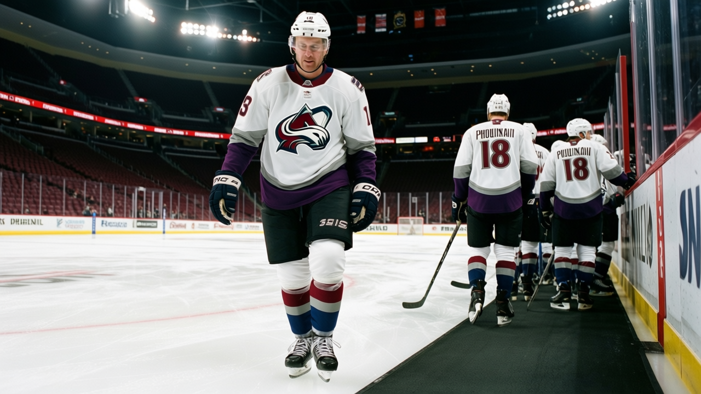

RUMOR METER: Nagy Signs for $484,790. Four Days Later He's on the Shelf. 🔥🔥
The week's only signing you would have noticed just went down with a leg. The price told you it was coming.
 E.J. "Ears" CallahanInsider · The Hot Stove
E.J. "Ears" CallahanInsider · The Hot Stove

Phoenix signed Nagy knowing the leg was a risk

The price was the tell.  Phoenix Coyotes signed
Phoenix Coyotes signed  Ladislav Nagy86 on 2004-12-09 for $484,790, and the Bureau's Book grades him 86. An 86 does not sign for that unless the market knows something. Days later he is on the injured list with a leg, onset between 2004-12-11 and 2004-12-13, return date 2004-12-21.
Ladislav Nagy86 on 2004-12-09 for $484,790, and the Bureau's Book grades him 86. An 86 does not sign for that unless the market knows something. Days later he is on the injured list with a leg, onset between 2004-12-11 and 2004-12-13, return date 2004-12-21.
This is the cheap-signing case arriving on schedule. A week ago the December signing class put six of twelve deals on IR, and the tell was the money: two of them re-signed at pay cuts that looked like a medical caveat. Nagy was a new signing, not a re-signing, but the shape is identical. Set his number beside the going rate at his grade.  Martin Havlat84, 86 overall, is on $0.90M in Ottawa.
Martin Havlat84, 86 overall, is on $0.90M in Ottawa.  Chris Drury82, 86, is on $2.00M in Buffalo.
Chris Drury82, 86, is on $2.00M in Buffalo.  Brenden Morrow86, 86, is on $1.30M in Dallas. Nagy took $484,790.
Brenden Morrow86, 86, is on $1.30M in Dallas. Nagy took $484,790.
| player | club | money |
|---|---|---|
| Ladislav Nagy | PHX | $484,790 |
| Martin Havlat | OTT | $0.90M |
| Chris Drury | BUF | $2.00M |
| Brenden Morrow | DAL | $1.30M |
The Book grades all four at 86. Nagy signed on 2004-12-09; the other three are on expiring deals.
Six deals came out of the league office between 2004-12-08 and 2004-12-09. Only Nagy is on the injury list. Only Nagy was a name you would have noticed changing hands.
The leg is not a long one. The return date is 2004-12-21. It lands on Phoenix Coyotes at the worst point on its calendar. Phoenix is 11-14-4, 28 points, fourth in the Pacific. The expiring table was already full:  Sean Burke90 at $4.20M,
Sean Burke90 at $4.20M,  Shane Doan86 at $2.40M,
Shane Doan86 at $2.40M,  Paul Mara83 at $1.20M, and
Paul Mara83 at $1.20M, and  Mike Sillinger88 at $1.80M, who is out until 2005-01-03 with a hand. The one player this club added in December, the one it paid almost nothing for, is the one breaking down.
Mike Sillinger88 at $1.80M, who is out until 2005-01-03 with a hand. The one player this club added in December, the one it paid almost nothing for, is the one breaking down.
One man who would know put it the way a scout does: you don't pay an 86 grade $484,790 unless somebody in the building knows why.